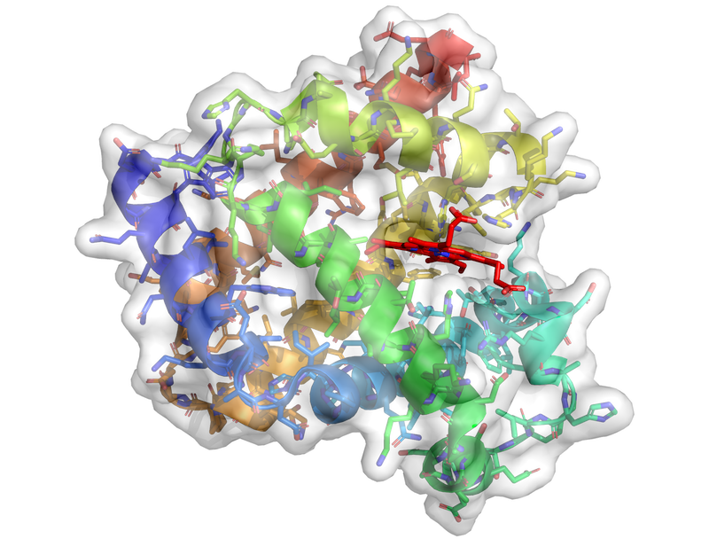

研究内容
生命現象の多くはタンパク質というヒモ状の分子が担っています。タンパク質は進化の結果として獲得された神秘的なふるまいを備えている一方で、多くの病気にも関与している重要な研究対象です。 タンパク質はとても複雑であり、数千から数十万個の原子からできています。このように複雑なものをどのようにして調べることができるでしょうか？ 私たちはこの問題に対し情報工学からアプローチしています。コンピュータの仮想空間の中でタンパク質を構築し、自然法則を真似て詳しく観察する手法(シミュレーション)を開発し応用する、そしてそこから得られたビッグデータもコンピュータに理解させ(データサイエンス)、次の仮説を作り出しシミュレーションを行う。 このサイクルを迅速・自動的にまわすフレームワークを確立することでタンパク質のふるまいを理解し制御する、具体的にはタンパク質機能を改善する合理的デザインや薬剤設計を実現することが目標です

ミオグロビンという酸素を貯蔵する タンパク質の構造
シミュレーションの高速化・効率化
作成中
シミュレーションデータの解析法
作成中
実験データの解釈
作成中
その他
作成中